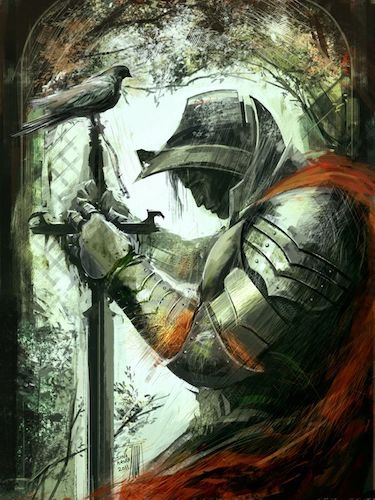
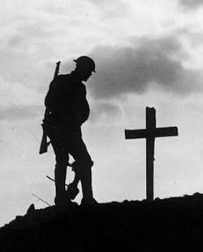

ㅤ
Истории
Истории

― Книга "Герои наших дней"
Сколько стоит жизнь? За что стоит умирать?
Как растут настоящие герои? И стоит ли дать бой не смотря ни на что?
Молодой писатель, современник описываемых в книге событий,
написал её под впечатлением от героизма и отваги проявленной этими людьми.
Сержо Сергей Константинович родом из Сибири, написал рассказ который поведает о сильных людях.
― Книга "Герои наших дней"
Сколько стоит жизнь? За что стоит умирать? Как растут настоящие герои? И стоит ли дать бой не смотря ни на что? Молодой писатель, современник описываемых в книге событий, написал её под впечатлением от героизма и отваги проявленной этими людьми. Сержо Сергей Константинович родом из Сибири, написал рассказ который поведает о сильных людях.

― Книга "История о конце"
Действие происходит после того, как император Чара оставил трон и вместе с Хаббиасом бежал на север, оставив свою страну без защиты. Эта небольшая история расскажет нам о том, что произошло потом.
― Книга "Шаг в бесконечность"
Флор це Булько, человек, который носил на своих плечах страх целого мира, стоял на краю пропасти. Его мир, вся его жизнь, вся его ответственность рухнули в одну минуту. И теперь он стоял перед неизбежностью. Перед лицом смерти, которая не делала разницы между героем и простым человеком.
В его глазах отражалось усталость, усталость от нескончаемой борьбы, от непрекращающегося страха. Он хотел отпустить это бремя, он хотел увидеть солнце, почувствовать ветер на своей коже, услышать смех своих любимых. Что же он будет делать, столкнувшись с самой смертью?
ㅤ
― Книга "История о конце"
Действие происходит после того, как император Чара оставил трон и вместе с Хаббиасом бежал на север, оставив свою страну без защиты. Эта небольшая история расскажет нам о том, что произошло потом.
― Книга "Шаг в бесконечность"